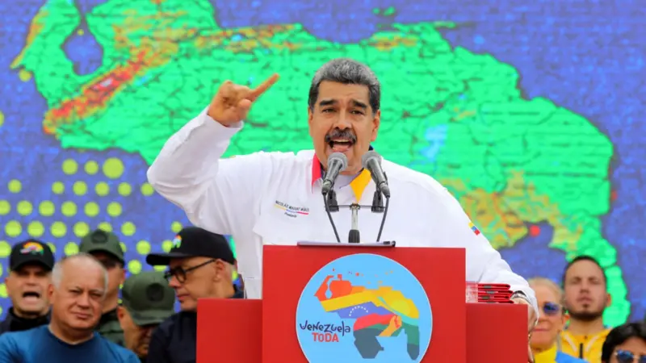

4 abril 2024
A histórica disputa territorial entre Guiana e Venezuela sobre o Essequibo voltou a esquentar.
A decisão de Caracas na quarta-feira (3/4) de aprovar uma lei criando um novo Estado nos 160.000 km² que ambos os países consideram seus provocou a revolta de Georgetown.
"Esta tentativa da Venezuela de anexar mais de dois terços do território soberano da Guiana e torná-lo parte da Venezuela é uma violação flagrante dos princípios fundamentais do direito internacional",
disse o Ministério das Relações Exteriores da Guiana em um comunicado.
As autoridades guianenses advertiram então que "não tolerarão a anexação, apreensão ou ocupação de qualquer parte" de seu território soberano.
A Venezuela, por outro lado, acusou seu vizinho de permitir a instalação de bases militares dos EUA na área disputada.
A Lei Orgânica de Defesa da Guiana Essequiba, assinada pelo presidente venezuelano Nicolás Maduro, declara o Essequibo como o 24º Estado da Venezuela.
"É uma lei para a defesa de um território que é nosso, para a defesa de um mar que é nosso e para a defesa de um ecossistema que está a ser barbaramente atacado por petrolíferas e piratas mineiros",
justificou o presidente da Assembleia Nacional, Jorge Rodríguez.
O instrumento busca colocar as empresas internacionais de petróleo e mineração na encruzilhada de escolha entre Venezuela e Guiana.
"Acredito que este capítulo defende com muita galhardia os interesses da Venezuela quando o presidente da República tem o poder de proibir a celebração de contratos ou acordos com pessoas jurídicas que estejam operando ou colaborando com a operação no território de Guiana Essequiba ou nas águas a serem delimitadas",
disse Maduro.

Sobre esta disposição, o economista José Guerra disse que "é uma mensagem para a ExxonMobil (...) e outras empresas que pensam em investir na Guiana, pois são avisadas de que, se o fizerem, não poderão operar na Venezuela."
No entanto, o ex-diretor do Banco Central da Venezuela (BCV) descartou que isso iniba a petroleira americana de continuar com seus planos na Guiana.
"Tenho a impressão de que a Venezuela precisa da ExxonMobil mais do que a ExxonMobil precisa da Venezuela (...) A Venezuela precisa da ExxonMobil, porque foi a segunda petroleira a chegar ao país e localizou as jazidas e sabe quais são os seus problemas, mas o mundo da ExxonMobil não acaba na Venezuela", explicou o economista à BBC Mundo.
Mas o texto não apenas fecha as portas para fazer negócios na Venezuela para empresas que atualmente operam na área disputada, mas também abre a possibilidade de punir venezuelanos.
"O artigo 25, de forma exaustiva e categórica, excelentíssimos advogados, excelentíssimos juízes, autoriza expressamente a proibição de concorrer a cargos eletivos ou de acesso a cargos públicos às pessoas que adotaram ou adotam condutas que direta ou indiretamente favoreçam ou apoiem a posição da Guiana, de seu governo, de empresas transnacionais como a ExxonMobil",
disse Maduro.
Isso poderia ser usado para possíveis desqualificações políticas.
A líder opositora María Corina Machado recusou-se a apoiar o referendo que o Governo venezuelano realizou em dezembro de 2023 sobre a questão do Essequibo,
considerando que não era a forma ideal de defender os direitos venezuelanos na região.
Machado está desqualificado e não pode enfrentar Maduro nas eleições presidenciais de 28 de julho.
A lei também proíbe a circulação de mapas ou documentos que não reconheçam soberania sobre o território em questão, sob pena de multas de mais de US$ 100 mil.
Os presidentes Nicolás Maduro e Irfaan Ali se reuniram em dezembro do ano passado para discutir a disputa sobre o Essequibo.